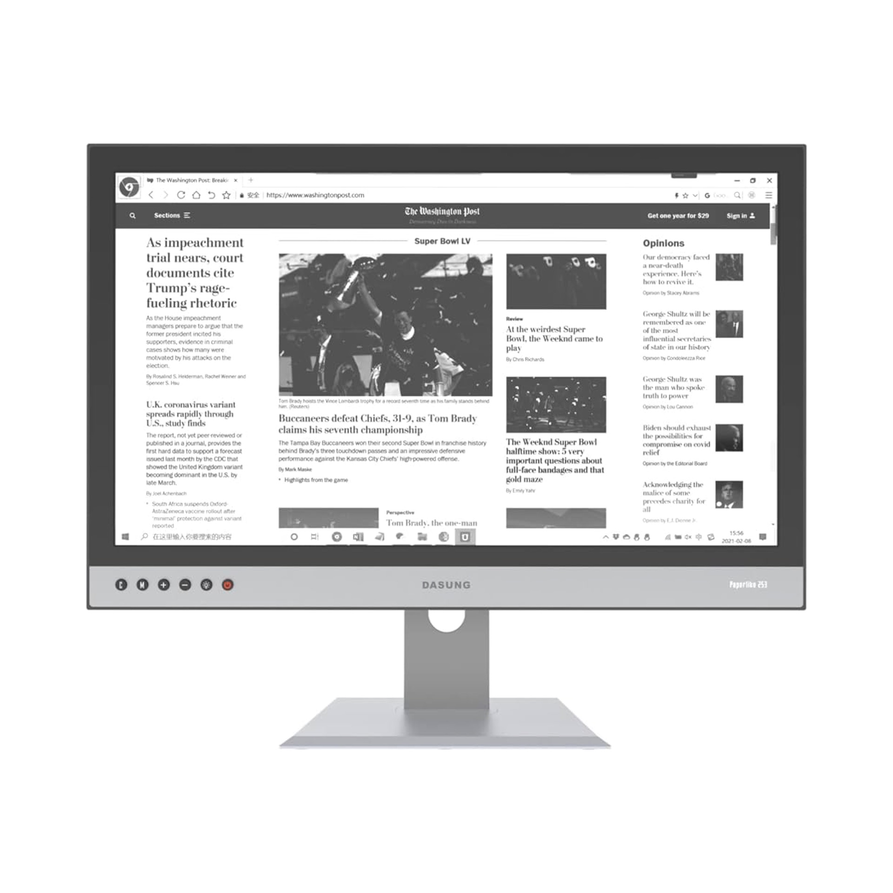

Dasung Paperlike 253
Dasung Paperlike 253 is a massive e-ink monitor. It is too expensive and too limited in functionalities for most people. But for niche user groups, like writers and programmers, this might be a miracle.
253 will soon be available in color (as of Sept 2023). All I see up to now is one promotion video from Dasung. I look forward to user video about the color display.